前言
因為目前有使用到aws的服務，所以將相關的問題和資訊留下來，以免忘記。
1 | ubuntu@ip-172-30-20-5:~$ df -h |
設定ubuntu相關
以下是有關設定ubuntu的相關資訊
設定vim
建立 vim 設定檔 .vimrc
1 | $ cd ~ |
增加openfiles
查看當前打開檔案數
1 | lsof | wc -l |
Modify /etc/systemd/user.conf and /etc/systemd/system.conf with the following line (this takes care of graphical login):
兩個都要修改
1 | DefaultLimitNOFILE=65535 |
Modify /etc/security/limits.conf with the following lines (this takes care of non-GUI login):
加入兩行
1 | * hard nofile 65535 |
查看命令
1 | ulimit -a |
重新開機
加入swap
因為連入一個vscode，會造成CPU100%，所以來加大一下swap
在開始之前，先下個 free 指定，檢查一下現在的 記憶體 和 SWAP 大小（使用 -h 自動轉換成容易閱讀的單位）
1 | $ free -h |
接下來，先把 swapfile 關掉
1 | sudo swapoff /swap.img |
然後建立新的 swapfile
1 | sudo rm /swap.img # 刪掉舊的 |
改權限
1 | sudo chmod 600 /swap.img # 更改權限 |
格式化
1 | sudo mkswap /swap.img |
啟用 swap.img
1 | sudo swapon /swap.img |
檢查一下
1 | $ cat /proc/swaps |
設定 /etc/fstab（如果本來沒有的話），請新增下面那一行
1 | /swap.img none swap sw 0 0 |
1 | ubuntu@ip-172-30-20-5:~$ df -h |
有安裝docker
1 | ubuntu@nvt-temp-ec2:~$ sudo df -h |
清理 systemd 的 journal 檔案
指令看目前使用的空間
1 | du -d 0 -h /var/log/journal/ |
固定節省一些磁碟空間，可以在/etc/systemd/journald.conf
1 | sudo vim /etc/systemd/journald.conf |
記得重啟 systemd-journald 服務
1 | sudo systemctl restart systemd-journald.service |
logrotate 設定
Log rotate 設定檔在 /etc/logrotate.d/
分割設定： 在/etc/logrotate.d/目錄下生成該tool檔案hslogrotate
1 | sudo vim /etc/logrotate.d/hslogrotate |
logrotate命令格式
logrotate [OPTION…]
1 | -d , --debug:debug模式，測試配置文件是否有錯誤 |
要測試寫好的設定檔可以用以下命令：
1 | sudo /usr/sbin/logrotate -d /etc/logrotate.d/hslogrotate |
要執行寫好的設定檔
1 | sudo /usr/sbin/logrotate -vf /etc/logrotate.d/hslogrotate |
log的寫法有兩種一種是清除檔案重新一個新檔
1 | root python3.6 /usr/share/nginx/0_0/schedule/event_gop_to_mp4.py >> /tmp/cron_event_gop_to_mp4.log 2> /tmp/cron_event_gop_to_mp4.log |
log的寫法有兩種一種是append檔案
1 | root python3.6 /usr/share/nginx/0_0/schedule/event_gop_to_mp4.py >> /tmp/cron_event_gop_to_mp4.log 2>&1 |
修改主機名稱
例如，把主機名稱修改成 ubuntu-bionic-x64：
1 | sudo hostnamectl set-hostname nvt-temp-ec2 |
時候終端機還看不出變化，我們可以用 hostnamectl status 檢查有沒有修改成功
修改完後沒有作用需要修改下面的檔案的值
1 | # sudo vim /etc/cloud/cloud.cfg |
在裏面修改preserve_hostname: true
設定定義private IP
因為自已有規劃好的pirvate IP，自已的subnet要先切好，就可以指定自已的private IP如下圖所示在Step3
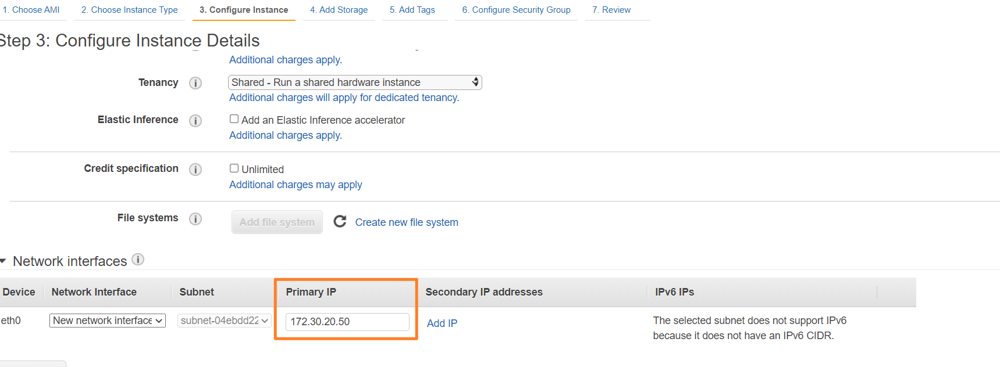
AWS的Instance不可終止的設定
可以看到下圖的圖片在aws的停止instance(個體)有下面的選項，不要選終止執行個體，那會將你的服務器刪除並且不能還原你的服務器的資料也消失
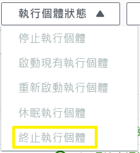
所以為了防止不小心來執行這個指令，所以需要設定來防止發生，如下圖所示先選擇要改的服務器，在選擇動作 –執行個體設定 – 變更終止保護
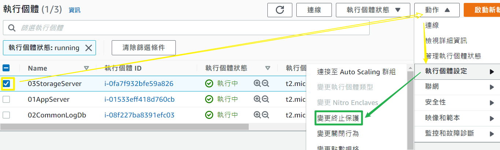
接下來如下圖來處理
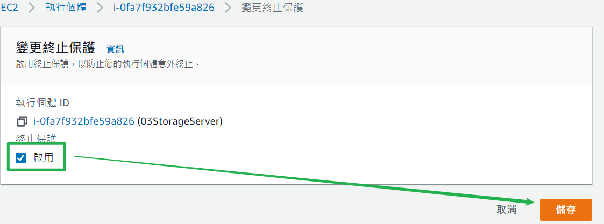
註冊
在aws上的註冊，他是綁定信用卡的，所以要小心以免被扣錢。有一點要小心，就是在註冊時的電記，如果你是幫客戶註冊時，先留自已的手機，在驗證碼時，也是一樣的手機，不然會收不到簡訊驗證碼或是一些問題，此時只能使用aws的人工驗證，時效性會慢很多。在完成驗證碼和建立完服務後，可將電話修改回客戶的。
建立一台服務器
在服務中，選擇EC2建立一台EC2如下圖所示
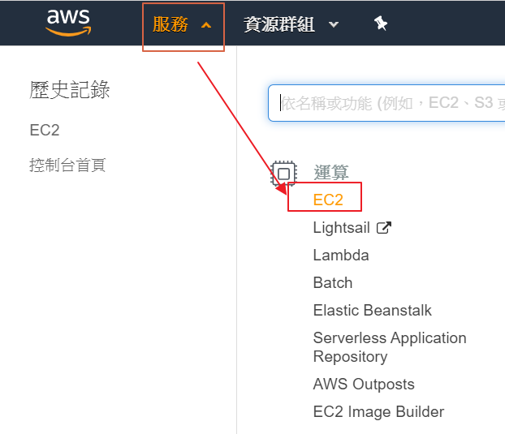
選完後，接下來選擇啟動執行個體來啟動一個服務器如下圖所示
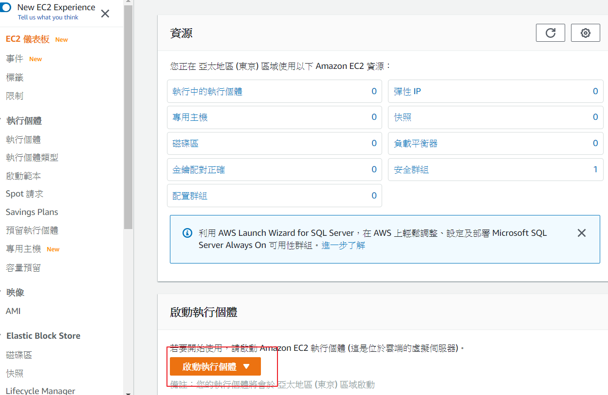
接下來選擇os的映像檔，如下圖所示
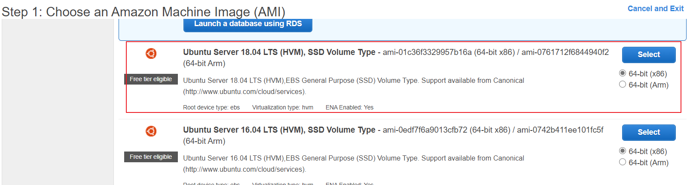
只能選擇免費
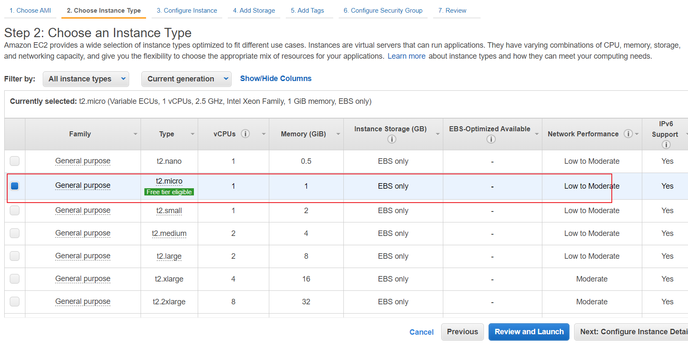
接來是很重要的一步，因為它關係著EC2啟動後，你能不能連進去的問題；這一頁的設定是屬於防火牆之類的設定，它可以控制那些IP、Port可以進出，所以我們先在這邊設定My IP（參考上圖紅框）可以連入，這樣我們才能在EC2啟動後連入進行操控。
在 EC2 中對於不同的實例可以搭配不同的安全設定
在這邊預設有用來連線到主機的 SSH 22 Port
如果要架設網站則會需要用到 HTTP 80 Port
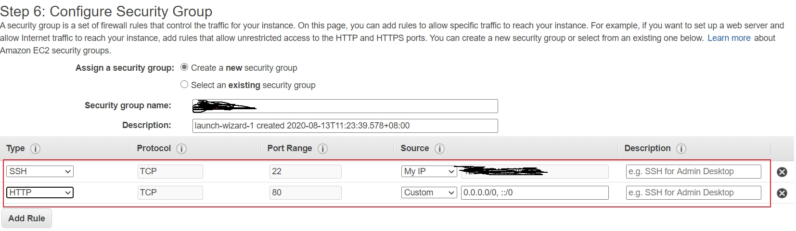
在新增實例的步驟中，可以選擇「Create a new security group」
由「Add Rule」來新增所需要用到的 Port
或是也可以在完成新增實例後，到管理控制台編輯 Security Group
例如事後發現需要使用 Gmail 寄信的功能
就必須再新增一個 SMTPS 465 Port，Source 選 Anywhere
Key Pair 連線密鑰
Amazon EC2 主機必須要用特製的 Key Pair 來登入
上個步驟按下「Launch」後，如果是第一次新增實例
則會跳出 Create a new key pair 的視窗
此時為 key pair 取一個簡單的名字
按下「Download Key Pair」後則會自動下載一個 .pem 檔

Launching 正式啟動
到這邊就完成新增實例的設定精靈
不過還必須替虛擬機器指定一個位址
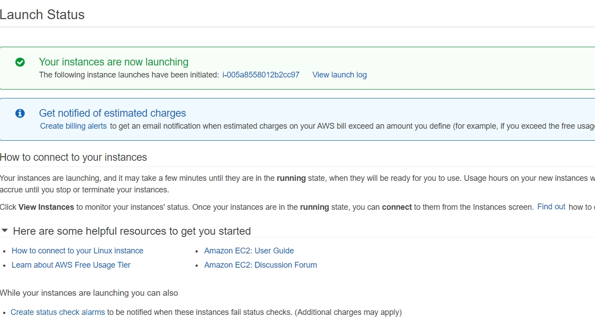
登入建立好的服務器
查看服務器的列表從服務->EC2來找到需要的服務器，他會顯示IP和DNS，如下圖所示
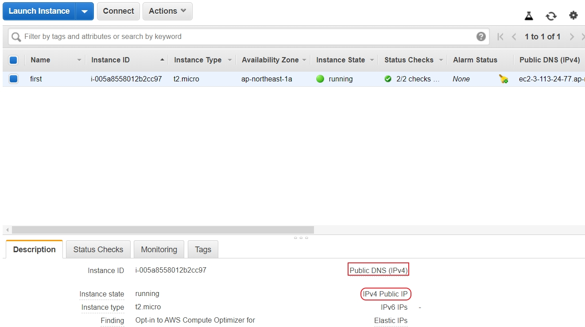
在登入我是使用MobaXterm_Personal來登入，只要將pem檔加入就可以登入，帳號是ubuntu，如下圖所示
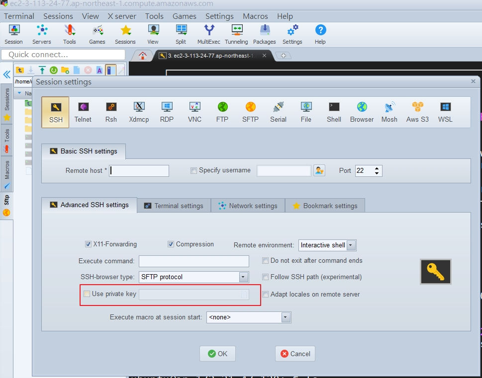
參考資料
https://diary.taskinghouse.com/posts/310691-ssh-connection-amazon-ec2/
IAM
因為本來是使用root的權限來登入，一直到有一台客戶修改了密碼，所以登不進去以為被駭客入侵，所以決定來研究一下AWS的I AM的權限控制。先來選擇功能
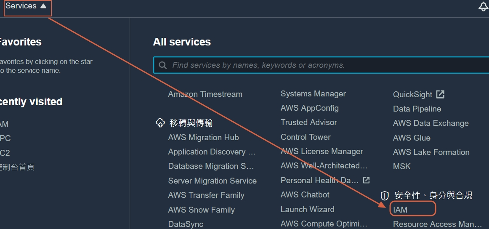
會進入IAM的頁面，可以來編輯之登入的網址，不然預設是一串數字按下”編輯“，可以設定別名
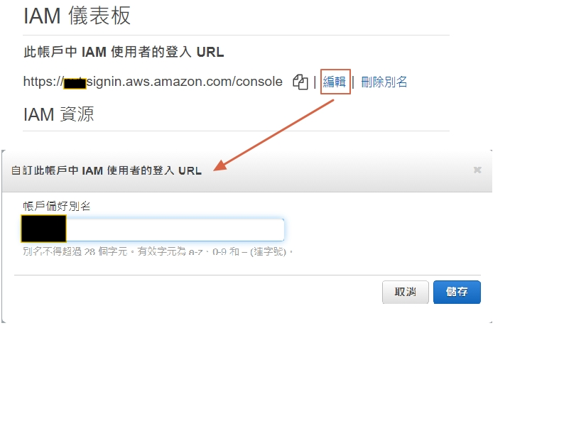
先來建立群組
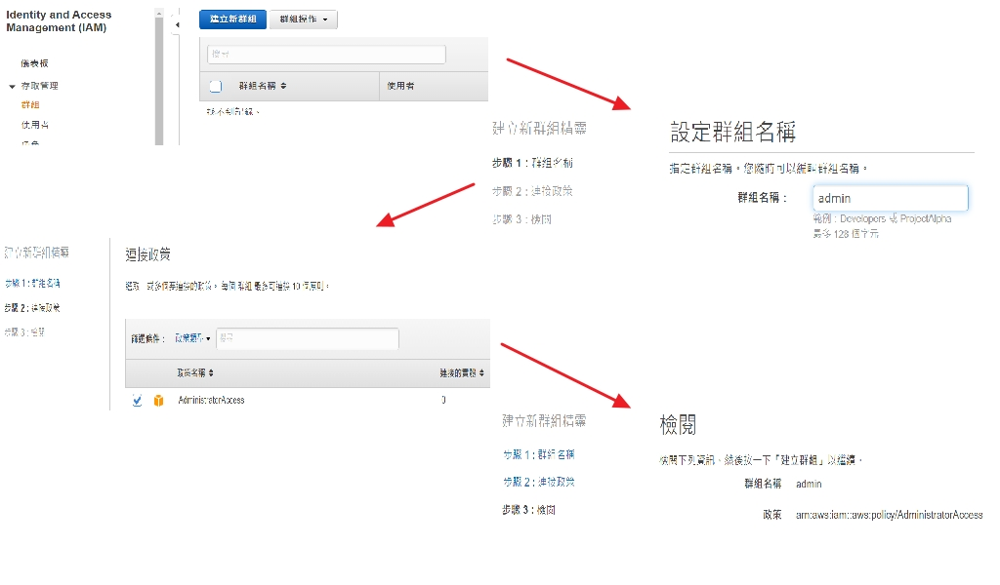
建立管理者
選擇建立管理者
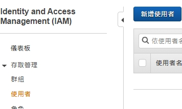
輸入相關資訊
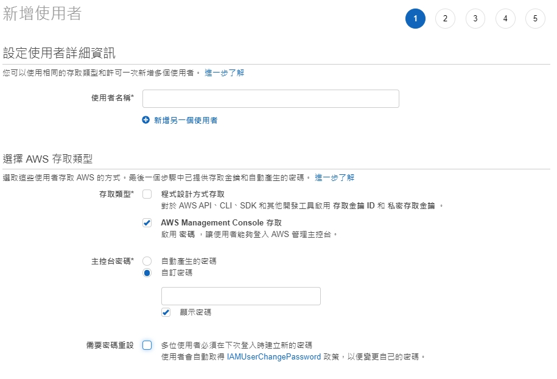
加入上面建立的群組,之後檢視
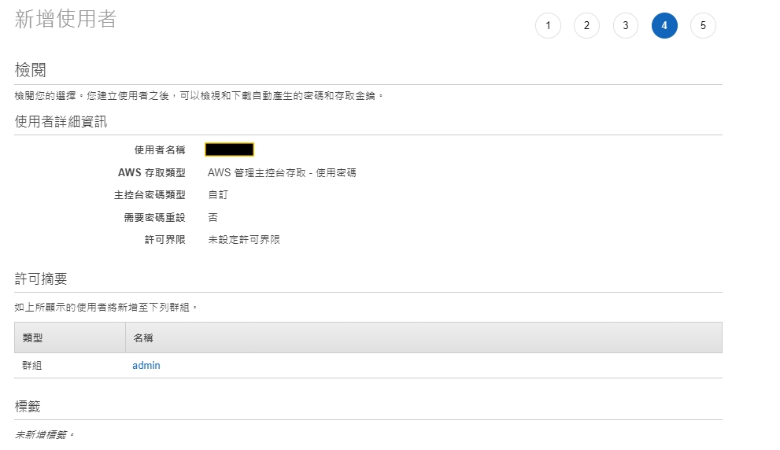
使用同一個image
因為服務器在建一是差不的，加上有一些已建立好的設定檔，所以需要在原來建立好的image檔上來安裝，所以來記錄一下不用每次都重新來安裝元件
前提是有一個已經安裝好的的服務器
先來建立image檔如下圖
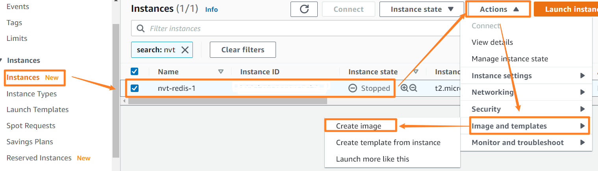
輸入image的記錄如下圖
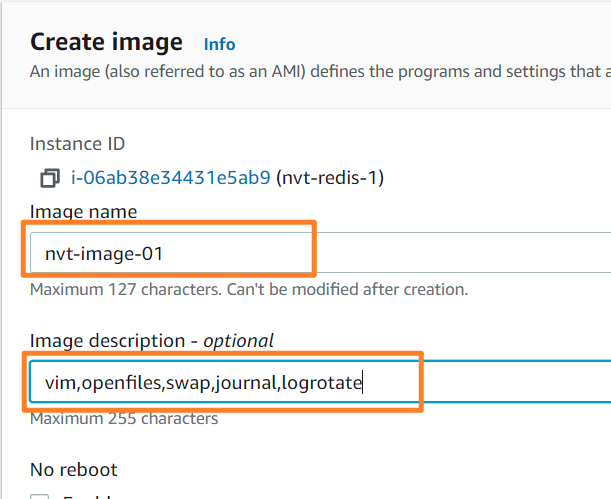
接下來建立新的EC2如下圖
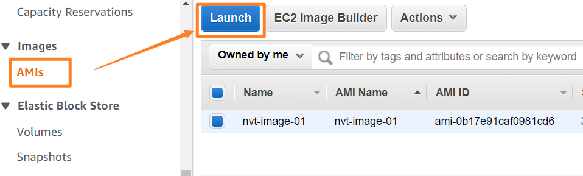
增加EBS
在aws可以追加容量
https://docs.aws.amazon.com/zh_tw/AWSEC2/latest/UserGuide/recognize-expanded-volume-linux.html
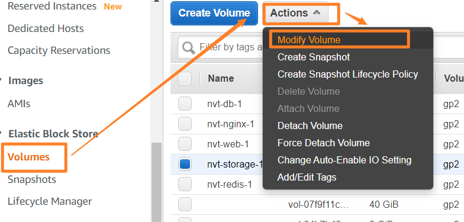
在連線到機器上
若要驗證每個磁碟區的檔案系統，請使用 df -hT 命令
1 | df -hT |
檢查磁碟區是否有必須擴展的分割區
請使用 lsblk 命令來顯示連接到執行個體區塊型儲存設備的相關資訊。
若要擴展根磁碟區上的分割區，請使用下列 growpart 命令。請注意，裝置名稱與分割區號碼之間有一個空格
1 | sudo growpart /dev/xvda 1 |
因為是ext4 檔案系統
1 | sudo resize2fs /dev/xvda1 |
掛載S3
如何掛載AWS S3 到AWS EC2
- 在IAM操作
- 建立一個使用者如nvts3
- 建立一個使用者群組s3group可以AmazonS3FullAccess
- 在S3操作
- 建立一個nvts3儲存貯體
- 建立policy
- 到ec2操作
先設定AWS的S3
在IAM操作如下圖所示
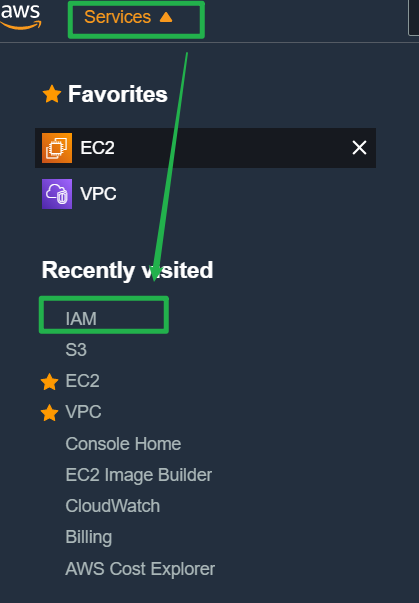
建立一個group

如下的設定加入一個群組名和可以儲取s3

建立一個使用者和加上面設定的群組
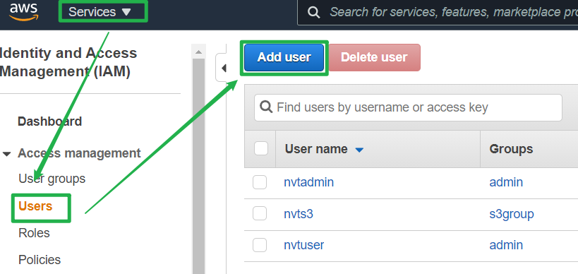
如下的步驟
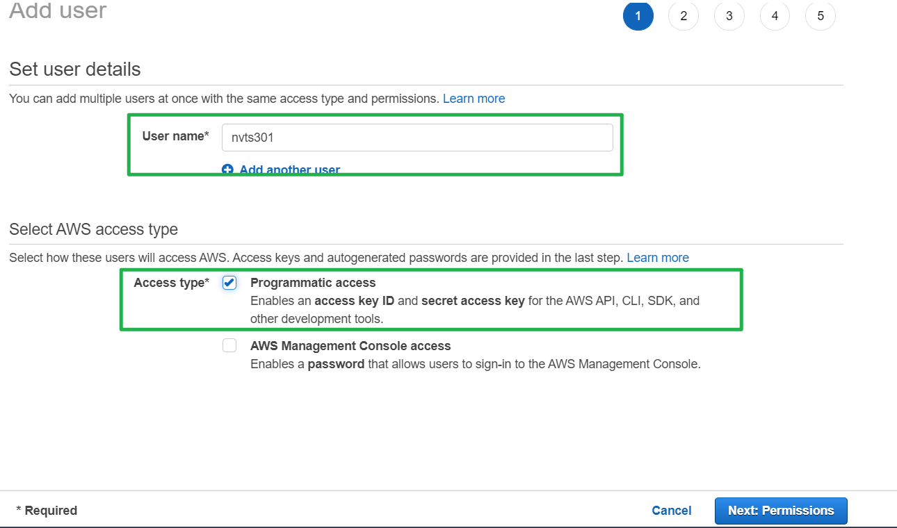
在S3上來操作如下圖所示
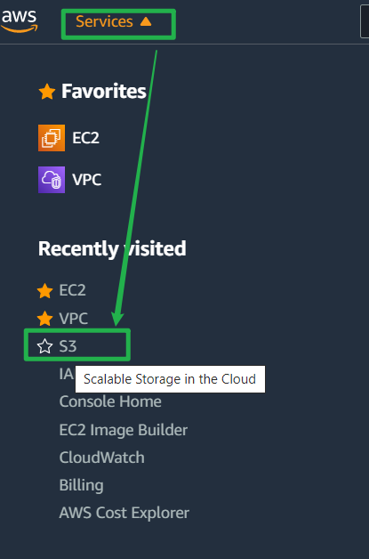
建立一個bucket
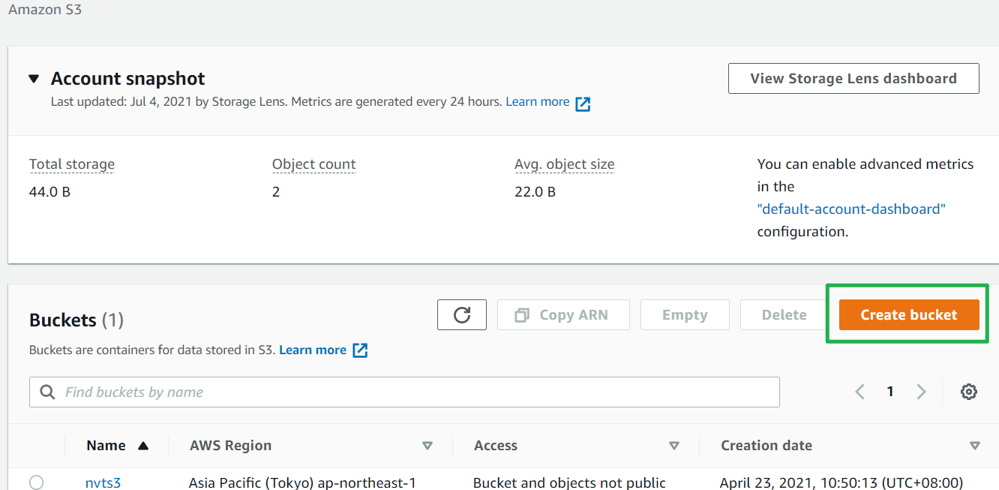
如下
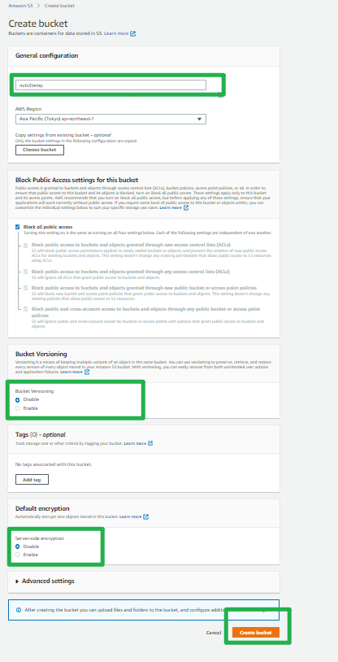
編輯policy來儲取設定的s3
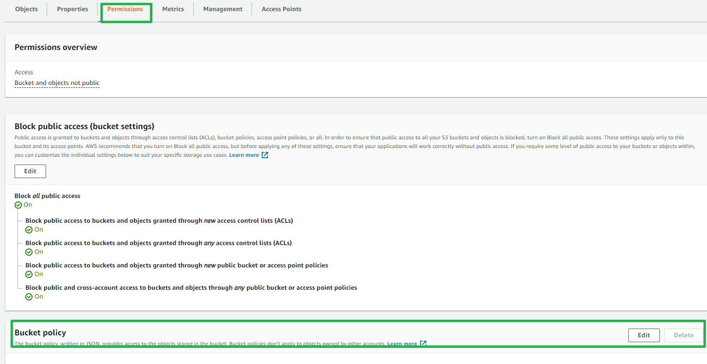
policy如下可以產生
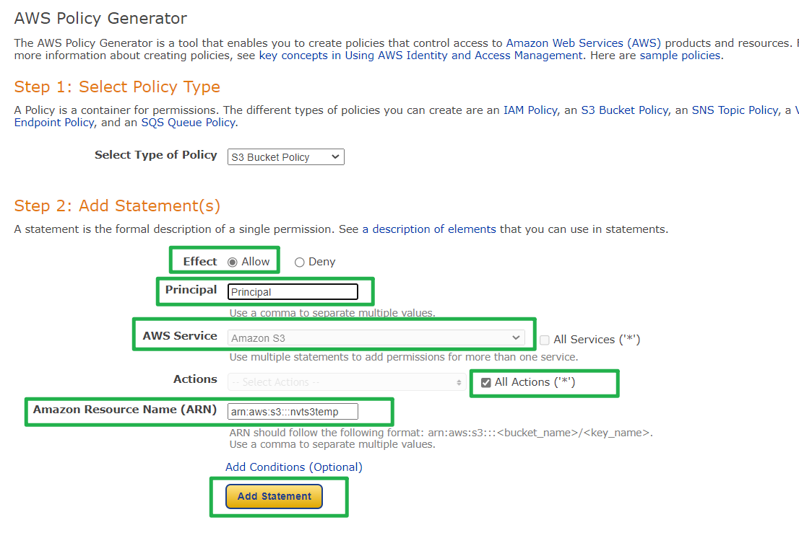
修改一下json的Principal
1 | { |
ec2的操作
在需要連接的ec2需要作此套件
先安裝需要用到的組件
1 | sudo apt-get install automake autotools-dev g++ git libcurl4-gnutls-dev libfuse-dev libssl-dev libxml2-dev make pkg-config |
正式安裝 s3fs
1 | git clone https://github.com/s3fs-fuse/s3fs-fuse.git |
必須修改 /etc/fuse.conf，移除 user_allow_other 前面的 # 註解
1 | echo AK----------Z:6/E30ph324j19jvuB-------cEIla8cMeqt > ~/.passwd-s3fs |
掛載
1 | cd ~ |
缷載
1 | umount -l /home/ubuntu/s3mnt |
自動掛載
1 | sudo vim /etc/fstab |
參考資料
如何掛載 AWS S3 到 AWS EC2 Instance - 掛載及卸載部份
利用S3fs在Amazon EC2 Linux实例上挂载S3存储桶
Router 53
在註冊完網域後，可以來註冊一下來連接網域和IP
如下來選擇
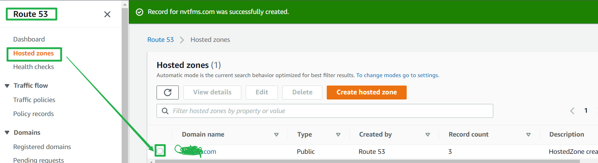
選擇要處理的Domain name，進入
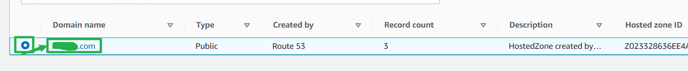
會顯示下面的畫面
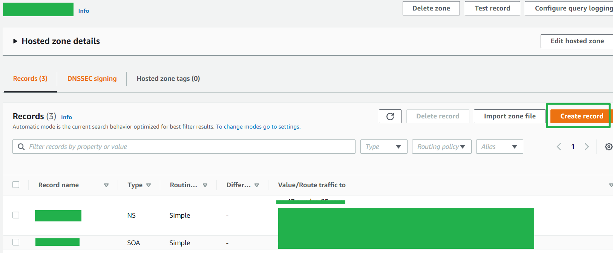
可以選擇Create record來加入A和IP